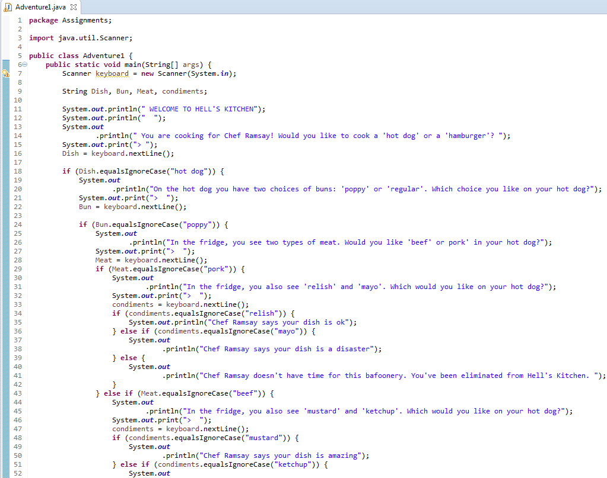

Choose Your Own Adventure Project

Description
Our main project in Java was the Choose Your Own Adventure Project. We learned about the basics of Java and applied what we learned on this project. We used if statements, variables, and the scanner method to make an adventure where the user chose their own path.
Concepts Learned:
- writing if, if-else, and else statements
- printing things out using system.out.println
- creating variables and assigning them to values
- basic java syntax
- using scanner and keyboard.next